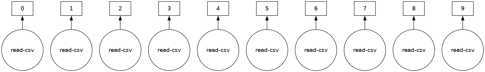
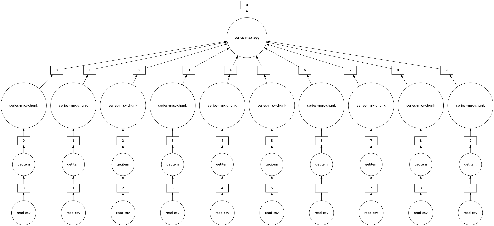
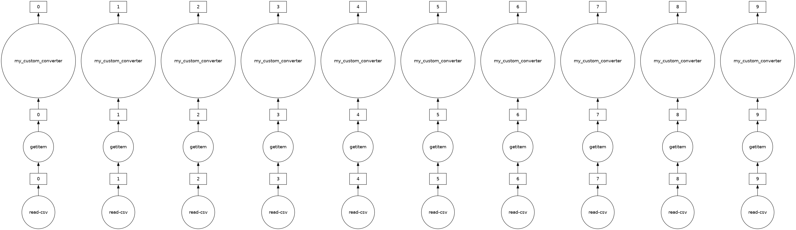

You can run this notebook in a live session  or view it on Github.
or view it on Github.

Dask DataFrame - parallelized pandas#
Looks and feels like the pandas API, but for parallel and distributed workflows.
At its core, the dask.dataframe module implements a “blocked parallel” DataFrame object that looks and feels like the pandas API, but for parallel and distributed workflows. One Dask DataFrame is comprised of many in-memory pandas DataFrames separated along the index. One operation on a Dask DataFrame triggers many pandas operations on the constituent pandas DataFrames in a way that is mindful of potential parallelism and memory constraints.

Related Documentation
When to use dask.dataframe#
pandas is great for tabular datasets that fit in memory. A general rule of thumb for pandas is:
- “Have 5 to 10 times as much RAM as the size of your dataset”
Wes McKinney (2017) in 10 things I hate about pandas
Here “size of dataset” means dataset size on the disk.
Dask becomes useful when the datasets exceed the above rule.
In this notebook, you will be working with the New York City Airline data. This dataset is only ~200MB, so that you can download it in a reasonable time, but dask.dataframe will scale to datasets much larger than memory.
Create datasets#
Create the datasets you will be using in this notebook:
[1]:
%run prep.py -d flights
Set up your local cluster#
Create a local Dask cluster and connect it to the client. Don’t worry about this bit of code for now, you will learn more in the Distributed notebook.
[2]:
from dask.distributed import Client
client = Client(n_workers=4)
client
[2]:
Client
Client-03752752-b995-11f0-8f11-7c1e521a36f9
| Connection method: Cluster object | Cluster type: distributed.LocalCluster |
| Dashboard: http://127.0.0.1:8787/status |
Cluster Info
LocalCluster
8e16eabd
| Dashboard: http://127.0.0.1:8787/status | Workers: 4 |
| Total threads: 4 | Total memory: 15.62 GiB |
| Status: running | Using processes: True |
Scheduler Info
Scheduler
Scheduler-d81c5769-c7fa-4278-b247-2e1d804ebb2e
| Comm: tcp://127.0.0.1:43335 | Workers: 4 |
| Dashboard: http://127.0.0.1:8787/status | Total threads: 4 |
| Started: Just now | Total memory: 15.62 GiB |
Workers
Worker: 0
| Comm: tcp://127.0.0.1:45437 | Total threads: 1 |
| Dashboard: http://127.0.0.1:33429/status | Memory: 3.91 GiB |
| Nanny: tcp://127.0.0.1:33991 | |
| Local directory: /tmp/dask-worker-space/worker-5ccgb8ek | |
Worker: 1
| Comm: tcp://127.0.0.1:34169 | Total threads: 1 |
| Dashboard: http://127.0.0.1:44547/status | Memory: 3.91 GiB |
| Nanny: tcp://127.0.0.1:42791 | |
| Local directory: /tmp/dask-worker-space/worker-03ls75sx | |
Worker: 2
| Comm: tcp://127.0.0.1:42413 | Total threads: 1 |
| Dashboard: http://127.0.0.1:43701/status | Memory: 3.91 GiB |
| Nanny: tcp://127.0.0.1:40581 | |
| Local directory: /tmp/dask-worker-space/worker-ftg8q1bo | |
Worker: 3
| Comm: tcp://127.0.0.1:37819 | Total threads: 1 |
| Dashboard: http://127.0.0.1:45661/status | Memory: 3.91 GiB |
| Nanny: tcp://127.0.0.1:34335 | |
| Local directory: /tmp/dask-worker-space/worker-mgsgz495 | |
Dask Diagnostic Dashboard#
Dask Distributed provides a useful Dashboard to visualize the state of your cluster and computations.
If you’re on JupyterLab or Binder, you can use the Dask JupyterLab extension (which should be already installed in your environment) to open the dashboard plots:
Click on the Dask logo in the left sidebar
Click on the magnifying glass icon, which will automatically connect to the active dashboard (if that doesn’t work, you can type/paste the dashboard link http://127.0.0.1:8787 in the field)
Click on “Task Stream”, “Progress Bar”, and “Worker Memory”, which will open these plots in new tabs
Re-organize the tabs to suit your workflow!
Alternatively, click on the dashboard link displayed in the Client details above: http://127.0.0.1:8787/status. It will open a new browser tab with the Dashboard.
Reading and working with datasets#
Let’s read an extract of flights in the USA across several years. This data is specific to flights out of the three airports in the New York City area.
[3]:
import os
import dask
By convention, we import the module dask.dataframe as dd, and call the corresponding DataFrame object ddf.
Note: The term “Dask DataFrame” is slightly overloaded. Depending on the context, it can refer to the module or the DataFrame object. To avoid confusion, throughout this notebook:
dask.dataframe(note the all lowercase) refers to the API, andDataFrame(note the CamelCase) refers to the object.
The following filename includes a glob pattern *, so all files in the path matching that pattern will be read into the same DataFrame.
[4]:
import dask.dataframe as dd
ddf = dd.read_csv(
os.path.join("data", "nycflights", "*.csv"), parse_dates={"Date": [0, 1, 2]}
)
ddf
[4]:
| Date | DayOfWeek | DepTime | CRSDepTime | ArrTime | CRSArrTime | UniqueCarrier | FlightNum | TailNum | ActualElapsedTime | CRSElapsedTime | AirTime | ArrDelay | DepDelay | Origin | Dest | Distance | TaxiIn | TaxiOut | Cancelled | Diverted | |
|---|---|---|---|---|---|---|---|---|---|---|---|---|---|---|---|---|---|---|---|---|---|
| npartitions=10 | |||||||||||||||||||||
| datetime64[ns] | int64 | float64 | int64 | float64 | int64 | object | int64 | float64 | float64 | int64 | float64 | float64 | float64 | object | object | float64 | float64 | float64 | int64 | int64 | |
| ... | ... | ... | ... | ... | ... | ... | ... | ... | ... | ... | ... | ... | ... | ... | ... | ... | ... | ... | ... | ... | |
| ... | ... | ... | ... | ... | ... | ... | ... | ... | ... | ... | ... | ... | ... | ... | ... | ... | ... | ... | ... | ... | ... |
| ... | ... | ... | ... | ... | ... | ... | ... | ... | ... | ... | ... | ... | ... | ... | ... | ... | ... | ... | ... | ... | |
| ... | ... | ... | ... | ... | ... | ... | ... | ... | ... | ... | ... | ... | ... | ... | ... | ... | ... | ... | ... | ... |
Dask has not loaded the data yet, it has:
investigated the input path and found that there are ten matching files
intelligently created a set of jobs for each chunk – one per original CSV file in this case
Notice that the representation of the DataFrame object contains no data - Dask has just done enough to read the start of the first file, and infer the column names and dtypes.
Lazy Evaluation#
Most Dask Collections, including Dask DataFrame are evaluated lazily, which means Dask constructs the logic (called task graph) of your computation immediately but “evaluates” them only when necessary. You can view this task graph using .visualize().
You will learn more about this in the Delayed notebook, but for now, note that we need to call .compute() to trigger actual computations.
[5]:
ddf.visualize()
[5]:

Some functions like len and head also trigger a computation. Specifically, calling len will:
load actual data, (that is, load each file into a pandas DataFrame)
then apply the corresponding functions to each pandas DataFrame (also known as a partition)
combine the subtotals to give you the final grand total
[6]:
# load and count number of rows
len(ddf)
[6]:
9990
You can view the start and end of the data as you would in pandas:
[7]:
ddf.head()
[7]:
| Date | DayOfWeek | DepTime | CRSDepTime | ArrTime | CRSArrTime | UniqueCarrier | FlightNum | TailNum | ActualElapsedTime | ... | AirTime | ArrDelay | DepDelay | Origin | Dest | Distance | TaxiIn | TaxiOut | Cancelled | Diverted | |
|---|---|---|---|---|---|---|---|---|---|---|---|---|---|---|---|---|---|---|---|---|---|
| 0 | 1990-01-01 | 1 | 1621.0 | 1540 | 1747.0 | 1701 | US | 33 | NaN | 86.0 | ... | NaN | 46.0 | 41.0 | EWR | PIT | 319.0 | NaN | NaN | 0 | 0 |
| 1 | 1990-01-02 | 2 | 1547.0 | 1540 | 1700.0 | 1701 | US | 33 | NaN | 73.0 | ... | NaN | -1.0 | 7.0 | EWR | PIT | 319.0 | NaN | NaN | 0 | 0 |
| 2 | 1990-01-03 | 3 | 1546.0 | 1540 | 1710.0 | 1701 | US | 33 | NaN | 84.0 | ... | NaN | 9.0 | 6.0 | EWR | PIT | 319.0 | NaN | NaN | 0 | 0 |
| 3 | 1990-01-04 | 4 | 1542.0 | 1540 | 1710.0 | 1701 | US | 33 | NaN | 88.0 | ... | NaN | 9.0 | 2.0 | EWR | PIT | 319.0 | NaN | NaN | 0 | 0 |
| 4 | 1990-01-05 | 5 | 1549.0 | 1540 | 1706.0 | 1701 | US | 33 | NaN | 77.0 | ... | NaN | 5.0 | 9.0 | EWR | PIT | 319.0 | NaN | NaN | 0 | 0 |
5 rows × 21 columns
ddf.tail()
# ValueError: Mismatched dtypes found in `pd.read_csv`/`pd.read_table`.
# +----------------+---------+----------+
# | Column | Found | Expected |
# +----------------+---------+----------+
# | CRSElapsedTime | float64 | int64 |
# | TailNum | object | float64 |
# +----------------+---------+----------+
# The following columns also raised exceptions on conversion:
# - TailNum
# ValueError("could not convert string to float: 'N54711'")
# Usually this is due to dask's dtype inference failing, and
# *may* be fixed by specifying dtypes manually by adding:
# dtype={'CRSElapsedTime': 'float64',
# 'TailNum': 'object'}
# to the call to `read_csv`/`read_table`.
Unlike pandas.read_csv which reads in the entire file before inferring datatypes, dask.dataframe.read_csv only reads in a sample from the beginning of the file (or first file if using a glob). These inferred datatypes are then enforced when reading all partitions.
In this case, the datatypes inferred in the sample are incorrect. The first n rows have no value for CRSElapsedTime (which pandas infers as a float), and later on turn out to be strings (object dtype). Note that Dask gives an informative error message about the mismatch. When this happens you have a few options:
Specify dtypes directly using the
dtypekeyword. This is the recommended solution, as it’s the least error prone (better to be explicit than implicit) and also the most performant.Increase the size of the
samplekeyword (in bytes)Use
assume_missingto makedaskassume that columns inferred to beint(which don’t allow missing values) are actuallyfloats(which do allow missing values). In our particular case this doesn’t apply.
In our case we’ll use the first option and directly specify the dtypes of the offending columns.
[8]:
ddf = dd.read_csv(
os.path.join("data", "nycflights", "*.csv"),
parse_dates={"Date": [0, 1, 2]},
dtype={"TailNum": str, "CRSElapsedTime": float, "Cancelled": bool},
)
[9]:
ddf.tail() # now works
[9]:
| Date | DayOfWeek | DepTime | CRSDepTime | ArrTime | CRSArrTime | UniqueCarrier | FlightNum | TailNum | ActualElapsedTime | ... | AirTime | ArrDelay | DepDelay | Origin | Dest | Distance | TaxiIn | TaxiOut | Cancelled | Diverted | |
|---|---|---|---|---|---|---|---|---|---|---|---|---|---|---|---|---|---|---|---|---|---|
| 994 | 1999-01-25 | 1 | 632.0 | 635 | 803.0 | 817 | CO | 437 | N27213 | 91.0 | ... | 68.0 | -14.0 | -3.0 | EWR | RDU | 416.0 | 4.0 | 19.0 | False | 0 |
| 995 | 1999-01-26 | 2 | 632.0 | 635 | 751.0 | 817 | CO | 437 | N16217 | 79.0 | ... | 62.0 | -26.0 | -3.0 | EWR | RDU | 416.0 | 3.0 | 14.0 | False | 0 |
| 996 | 1999-01-27 | 3 | 631.0 | 635 | 756.0 | 817 | CO | 437 | N12216 | 85.0 | ... | 66.0 | -21.0 | -4.0 | EWR | RDU | 416.0 | 4.0 | 15.0 | False | 0 |
| 997 | 1999-01-28 | 4 | 629.0 | 635 | 803.0 | 817 | CO | 437 | N26210 | 94.0 | ... | 69.0 | -14.0 | -6.0 | EWR | RDU | 416.0 | 5.0 | 20.0 | False | 0 |
| 998 | 1999-01-29 | 5 | 632.0 | 635 | 802.0 | 817 | CO | 437 | N12225 | 90.0 | ... | 67.0 | -15.0 | -3.0 | EWR | RDU | 416.0 | 5.0 | 18.0 | False | 0 |
5 rows × 21 columns
Reading from remote storage#
If you’re thinking about distributed computing, your data is probably stored remotely on services (like Amazon’s S3 or Google’s cloud storage) and is in a friendlier format (like Parquet). Dask can read data in various formats directly from these remote locations lazily and in parallel.
Here’s how you can read the NYC taxi cab data from Amazon S3:
ddf = dd.read_parquet(
"s3://nyc-tlc/trip data/yellow_tripdata_2012-*.parquet",
)
You can also leverage Parquet-specific optimizations like column selection and metadata handling, learn more in the Dask documentation on working with Parquet files.
Computations with dask.dataframe#
Let’s compute the maximum of the flight delay.
With just pandas, we would loop over each file to find the individual maximums, then find the final maximum over all the individual maximums.
import pandas as pd
files = os.listdir(os.path.join('data', 'nycflights'))
maxes = []
for file in files:
df = pd.read_csv(os.path.join('data', 'nycflights', file))
maxes.append(df.DepDelay.max())
final_max = max(maxes)
dask.dataframe lets us write pandas-like code, that operates on larger-than-memory datasets in parallel.
[10]:
%%time
result = ddf.DepDelay.max()
result.compute()
CPU times: user 18.3 ms, sys: 3.4 ms, total: 21.7 ms
Wall time: 53.1 ms
[10]:
409.0
This creates the lazy computation for us and then runs it.
Note: Dask will delete intermediate results (like the full pandas DataFrame for each file) as soon as possible. This means you can handle datasets that are larger than memory but, repeated computations will have to load all of the data in each time. (Run the code above again, is it faster or slower than you would expect?)
You can view the underlying task graph using .visualize():
[11]:
# notice the parallelism
result.visualize()
[11]:

Exercises#
In this section you will do a few dask.dataframe computations. If you are comfortable with pandas then these should be familiar. You will have to think about when to call .compute().
1. How many rows are in our dataset?#
Hint: how would you check how many items are in a list?
[12]:
# Your code here
[13]:
len(ddf)
[13]:
9990
2. In total, how many non-canceled flights were taken?#
Hint: use boolean indexing.
[14]:
# Your code here
[15]:
len(ddf[~ddf.Cancelled])
[15]:
9383
3. In total, how many non-canceled flights were taken from each airport?#
Hint: use groupby.
[16]:
# Your code here
[17]:
ddf[~ddf.Cancelled].groupby("Origin").Origin.count().compute()
[17]:
Origin
EWR 4132
JFK 1085
LGA 4166
Name: Origin, dtype: int64
4. What was the average departure delay from each airport?#
[18]:
# Your code here
[19]:
ddf.groupby("Origin").DepDelay.mean().compute()
[19]:
Origin
EWR 12.500968
JFK 17.053456
LGA 10.169227
Name: DepDelay, dtype: float64
5. What day of the week has the worst average departure delay?#
[20]:
# Your code here
[21]:
ddf.groupby("DayOfWeek").DepDelay.mean().idxmax().compute()
[21]:
5
6. Let’s say the distance column is erroneous and you need to add 1 to all values, how would you do this?#
[22]:
# Your code here
[23]:
ddf["Distance"].apply(
lambda x: x + 1
).compute() # don't worry about the warning, we'll discuss in the next sections
# OR
(ddf["Distance"] + 1).compute()
/usr/share/miniconda/envs/dask-tutorial/lib/python3.10/site-packages/dask/dataframe/core.py:4139: UserWarning:
You did not provide metadata, so Dask is running your function on a small dataset to guess output types. It is possible that Dask will guess incorrectly.
To provide an explicit output types or to silence this message, please provide the `meta=` keyword, as described in the map or apply function that you are using.
Before: .apply(func)
After: .apply(func, meta=('Distance', 'float64'))
warnings.warn(meta_warning(meta))
[23]:
0 320.0
1 320.0
2 320.0
3 320.0
4 320.0
...
994 417.0
995 417.0
996 417.0
997 417.0
998 417.0
Name: Distance, Length: 9990, dtype: float64
Sharing Intermediate Results#
When computing all of the above, we sometimes did the same operation more than once. For most operations, dask.dataframe stores the arguments, allowing duplicate computations to be shared and only computed once.
For example, let’s compute the mean and standard deviation for departure delay of all non-canceled flights. Since Dask operations are lazy, those values aren’t the final results yet. They’re just the steps required to get the result.
If you compute them with two calls to compute, there is no sharing of intermediate computations.
[24]:
non_canceled = ddf[~ddf.Cancelled]
mean_delay = non_canceled.DepDelay.mean()
std_delay = non_canceled.DepDelay.std()
[25]:
%%time
mean_delay_res = mean_delay.compute()
std_delay_res = std_delay.compute()
CPU times: user 60.6 ms, sys: 9.38 ms, total: 70 ms
Wall time: 158 ms
dask.compute#
But let’s try by passing both to a single compute call.
[26]:
%%time
mean_delay_res, std_delay_res = dask.compute(mean_delay, std_delay)
CPU times: user 49.8 ms, sys: 791 μs, total: 50.6 ms
Wall time: 98.8 ms
Using dask.compute takes roughly 1/2 the time. This is because the task graphs for both results are merged when calling dask.compute, allowing shared operations to only be done once instead of twice. In particular, using dask.compute only does the following once:
the calls to
read_csvthe filter (
df[~df.Cancelled])some of the necessary reductions (
sum,count)
To see what the merged task graphs between multiple results look like (and what’s shared), you can use the dask.visualize function (you might want to use filename='graph.pdf' to save the graph to disk so that you can zoom in more easily):
[27]:
dask.visualize(mean_delay, std_delay, engine="cytoscape")
[27]:
.persist()#
While using a distributed scheduler (you will learn more about schedulers in the upcoming notebooks), you can keep some data that you want to use often in the distributed memory.
persist generates “Futures” (more on this later as well) and stores them in the same structure as your output. You can use persist with any data or computation that fits in memory.
If you want to analyze data only for non-canceled flights departing from JFK airport, you can either have two compute calls like in the previous section:
[28]:
non_cancelled = ddf[~ddf.Cancelled]
ddf_jfk = non_cancelled[non_cancelled.Origin == "JFK"]
[29]:
%%time
ddf_jfk.DepDelay.mean().compute()
ddf_jfk.DepDelay.sum().compute()
CPU times: user 70.5 ms, sys: 3.35 ms, total: 73.9 ms
Wall time: 169 ms
[29]:
18503.0
Or, consider persisting that subset of data in memory.
See the “Graph” dashboard plot, the red squares indicate persisted data stored as Futures in memory. You will also notice an increase in Worker Memory (another dashboard plot) consumption.
[30]:
ddf_jfk = ddf_jfk.persist() # returns back control immediately
[31]:
%%time
ddf_jfk.DepDelay.mean().compute()
ddf_jfk.DepDelay.std().compute()
CPU times: user 71.8 ms, sys: 5.22 ms, total: 77 ms
Wall time: 127 ms
[31]:
36.85799641792652
Analyses on this persisted data is faster because we are not repeating the loading and selecting (non-canceled, JFK departure) operations.
Custom code with Dask DataFrame#
dask.dataframe only covers a small but well-used portion of the pandas API.
This limitation is for two reasons:
The Pandas API is huge
Some operations are genuinely hard to do in parallel, e.g, sorting.
Additionally, some important operations like set_index work, but are slower than in pandas because they include substantial shuffling of data, and may write out to disk.
What if you want to use some custom functions that aren’t (or can’t be) implemented for Dask DataFrame yet?
You can open an issue on the Dask issue tracker to check how feasible the function could be to implement, and you can consider contributing this function to Dask.
In case it’s a custom function or tricky to implement, dask.dataframe provides a few methods to make applying custom functions to Dask DataFrames easier:
`map_partitions<https://docs.dask.org/en/latest/generated/dask.dataframe.DataFrame.map_partitions.html>`__: to run a function on each partition (each pandas DataFrame) of the Dask DataFrame`map_overlap<https://docs.dask.org/en/latest/generated/dask.dataframe.rolling.map_overlap.html>`__: to run a function on each partition (each pandas DataFrame) of the Dask DataFrame, with some rows shared between neighboring partitions`reduction<https://docs.dask.org/en/latest/generated/dask.dataframe.Series.reduction.html>`__: for custom row-wise reduction operations.
Let’s take a quick look at the map_partitions() function:
[32]:
help(ddf.map_partitions)
Help on method map_partitions in module dask.dataframe.core:
map_partitions(func, *args, **kwargs) method of dask.dataframe.core.DataFrame instance
Apply Python function on each DataFrame partition.
Note that the index and divisions are assumed to remain unchanged.
Parameters
----------
func : function
The function applied to each partition. If this function accepts
the special ``partition_info`` keyword argument, it will receive
information on the partition's relative location within the
dataframe.
args, kwargs :
Positional and keyword arguments to pass to the function.
Positional arguments are computed on a per-partition basis, while
keyword arguments are shared across all partitions. The partition
itself will be the first positional argument, with all other
arguments passed *after*. Arguments can be ``Scalar``, ``Delayed``,
or regular Python objects. DataFrame-like args (both dask and
pandas) will be repartitioned to align (if necessary) before
applying the function; see ``align_dataframes`` to control this
behavior.
enforce_metadata : bool, default True
Whether to enforce at runtime that the structure of the DataFrame
produced by ``func`` actually matches the structure of ``meta``.
This will rename and reorder columns for each partition,
and will raise an error if this doesn't work,
but it won't raise if dtypes don't match.
transform_divisions : bool, default True
Whether to apply the function onto the divisions and apply those
transformed divisions to the output.
align_dataframes : bool, default True
Whether to repartition DataFrame- or Series-like args
(both dask and pandas) so their divisions align before applying
the function. This requires all inputs to have known divisions.
Single-partition inputs will be split into multiple partitions.
If False, all inputs must have either the same number of partitions
or a single partition. Single-partition inputs will be broadcast to
every partition of multi-partition inputs.
meta : pd.DataFrame, pd.Series, dict, iterable, tuple, optional
An empty ``pd.DataFrame`` or ``pd.Series`` that matches the dtypes
and column names of the output. This metadata is necessary for
many algorithms in dask dataframe to work. For ease of use, some
alternative inputs are also available. Instead of a ``DataFrame``,
a ``dict`` of ``{name: dtype}`` or iterable of ``(name, dtype)``
can be provided (note that the order of the names should match the
order of the columns). Instead of a series, a tuple of ``(name,
dtype)`` can be used. If not provided, dask will try to infer the
metadata. This may lead to unexpected results, so providing
``meta`` is recommended. For more information, see
``dask.dataframe.utils.make_meta``.
Examples
--------
Given a DataFrame, Series, or Index, such as:
>>> import pandas as pd
>>> import dask.dataframe as dd
>>> df = pd.DataFrame({'x': [1, 2, 3, 4, 5],
... 'y': [1., 2., 3., 4., 5.]})
>>> ddf = dd.from_pandas(df, npartitions=2)
One can use ``map_partitions`` to apply a function on each partition.
Extra arguments and keywords can optionally be provided, and will be
passed to the function after the partition.
Here we apply a function with arguments and keywords to a DataFrame,
resulting in a Series:
>>> def myadd(df, a, b=1):
... return df.x + df.y + a + b
>>> res = ddf.map_partitions(myadd, 1, b=2)
>>> res.dtype
dtype('float64')
Here we apply a function to a Series resulting in a Series:
>>> res = ddf.x.map_partitions(lambda x: len(x)) # ddf.x is a Dask Series Structure
>>> res.dtype
dtype('int64')
By default, dask tries to infer the output metadata by running your
provided function on some fake data. This works well in many cases, but
can sometimes be expensive, or even fail. To avoid this, you can
manually specify the output metadata with the ``meta`` keyword. This
can be specified in many forms, for more information see
``dask.dataframe.utils.make_meta``.
Here we specify the output is a Series with no name, and dtype
``float64``:
>>> res = ddf.map_partitions(myadd, 1, b=2, meta=(None, 'f8'))
Here we map a function that takes in a DataFrame, and returns a
DataFrame with a new column:
>>> res = ddf.map_partitions(lambda df: df.assign(z=df.x * df.y))
>>> res.dtypes
x int64
y float64
z float64
dtype: object
As before, the output metadata can also be specified manually. This
time we pass in a ``dict``, as the output is a DataFrame:
>>> res = ddf.map_partitions(lambda df: df.assign(z=df.x * df.y),
... meta={'x': 'i8', 'y': 'f8', 'z': 'f8'})
In the case where the metadata doesn't change, you can also pass in
the object itself directly:
>>> res = ddf.map_partitions(lambda df: df.head(), meta=ddf)
Also note that the index and divisions are assumed to remain unchanged.
If the function you're mapping changes the index/divisions, you'll need
to clear them afterwards:
>>> ddf.map_partitions(func).clear_divisions() # doctest: +SKIP
Your map function gets information about where it is in the dataframe by
accepting a special ``partition_info`` keyword argument.
>>> def func(partition, partition_info=None):
... pass
This will receive the following information:
>>> partition_info # doctest: +SKIP
{'number': 1, 'division': 3}
For each argument and keyword arguments that are dask dataframes you will
receive the number (n) which represents the nth partition of the dataframe
and the division (the first index value in the partition). If divisions
are not known (for instance if the index is not sorted) then you will get
None as the division.
The “Distance” column in ddf is currently in miles. Let’s say we want to convert the units to kilometers and we have a general helper function as shown below. In this case, we can use map_partitions to apply this function across each of the internal pandas DataFrames in parallel.
[33]:
def my_custom_converter(df, multiplier=1):
return df * multiplier
meta = pd.Series(name="Distance", dtype="float64")
distance_km = ddf.Distance.map_partitions(
my_custom_converter, multiplier=0.6, meta=meta
)
[34]:
distance_km.visualize()
[34]:

[35]:
distance_km.head()
[35]:
0 191.4
1 191.4
2 191.4
3 191.4
4 191.4
Name: Distance, dtype: float64
What is meta?#
Since Dask operates lazily, it doesn’t always have enough information to infer the output structure (which includes datatypes) of certain operations.
meta is a suggestion to Dask about the output of your computation. Importantly, meta never infers with the output structure. Dask uses this meta until it can determine the actual output structure.
Even though there are many ways to define meta, we suggest using a small pandas Series or DataFrame that matches the structure of your final output.
Close you local Dask Cluster#
It’s good practice to always close any Dask cluster you create:
[36]:
client.shutdown()